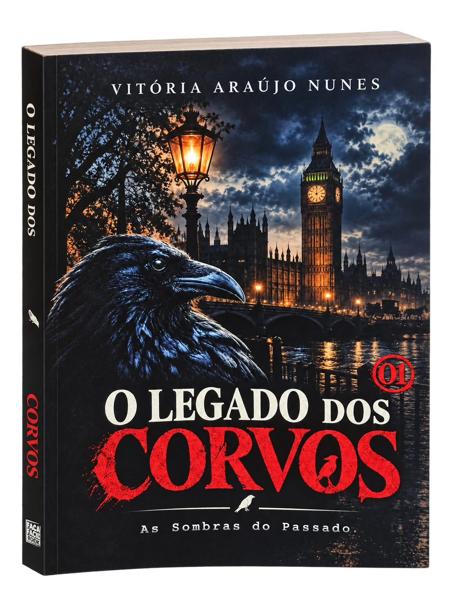

01 / A AUSÊNCIAUma morte.
Uma morte.
Perguntas demais.
Henry conhece o peso do luto. O que ele não consegue aceitar é a sensação de que alguém apagou parte da verdade.
ARQUIVO WOLFE — EM ABERTOLIVRO 01 / A TRILOGIA DOS CORVOS
Cinco anos após perder a irmã, um detetive descobre que o passado ainda está escrevendo a história.
TUDO COMEÇOU COM UMA PERDA
Emily Wolfe foi assassinada. Para todos, o tempo deveria ter encerrado o caso. Para seu irmão, o detetive Henry Wolfe, o tempo apenas tornou as perguntas mais perigosas.
Henry conhece o peso do luto. O que ele não consegue aceitar é a sensação de que alguém apagou parte da verdade.
ARQUIVO WOLFE — EM ABERTODocumentos esquecidos, mensagens anônimas e pistas que não deveriam existir levam a investigação para além de um único crime.
EVIDÊNCIA CLASSIFICADAUma mulher enigmática cruza o caminho de Henry. Quanto mais próximos ficam, mais difícil é separar coincidência de destino.
IDENTIDADE: IRIS CROWETrês peças de uma história maior. Toque nos arquivos e acompanhe os sinais — sem revelar o desfecho.
Uma morte que nunca deixou de perseguir Henry. Cinco anos depois, o caso volta a exigir respostas — e a verdade parece ter muitos interessados.
STATUS: INVESTIGAÇÃO EM ANDAMENTOObservadora, enigmática e difícil de decifrar. Ao se aproximar de Henry, Iris pode ser a chave para as respostas — ou mais uma parte do mistério.
STATUS: CONFIANÇA NÃO DETERMINADAUma organização que oficialmente nunca existiu. Seu nome surge entre pistas, ausências e segredos que parecem alcançar muito além das ruas de Londres.
STATUS: REGISTROS NÃO LOCALIZADOS“Eu vou encontrar
quem fez isso...”
HENRY WOLFE · PRELÚDIO
Conheça a edição física de O Legado dos Corvos — As Sombras do Passado, de Vitória Araújo Nunes.

EDIÇÃO FÍSICA · 2026As Sombras do Passado
Uma história de suspense policial, conspirações e escolhas impossíveis. Entre na investigação de Henry Wolfe e descubra até onde uma promessa pode levá-lo.
Entre nas sombras de Londres. Descubra o que permanece escondido quando todos acreditam que o caso terminou.
Consultar exemplar no WhatsAppPreço e disponibilidade informados diretamente pelo contato editorial.